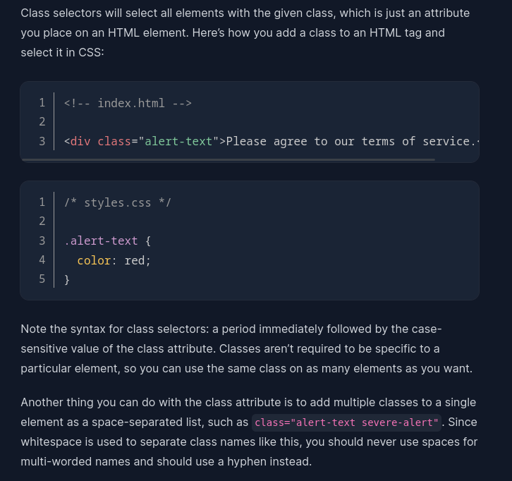

css
basic syntax
At the most basic level, CSS is made up of various rules. These rules are
made up of a selector (more on this in a bit) and a semicolon-separated
list of declarations, with each of those declarations being made up of a
property–value pair.
types of selectors
universal selectors
with the help of this selector everthing can be changed at a time
type selector
class selector

remaining about css
cascade
as we are having many css selectors we need to follow some rules this
tules is called "specificity"
to know specificity with different examples
box model
Assignments